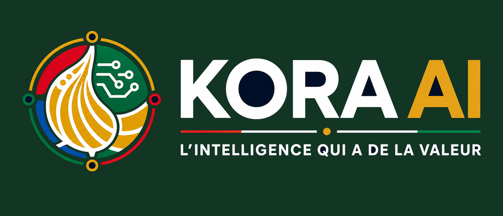
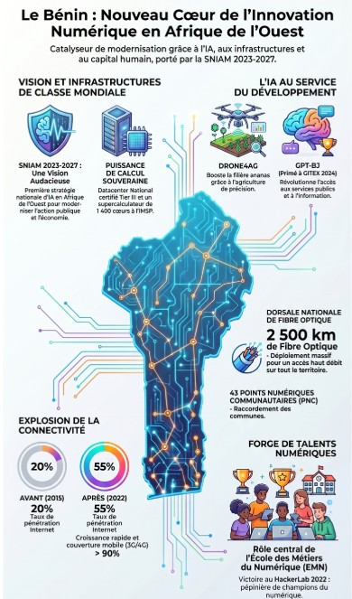
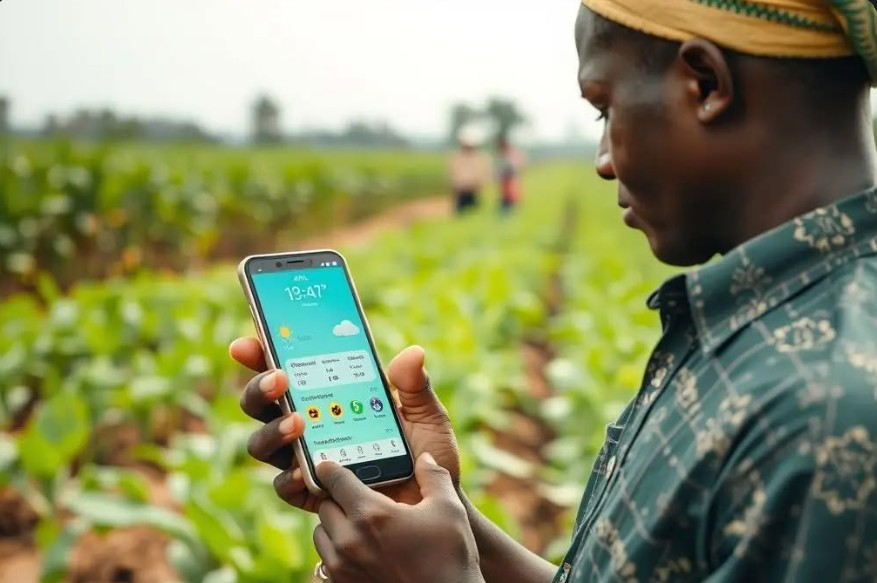
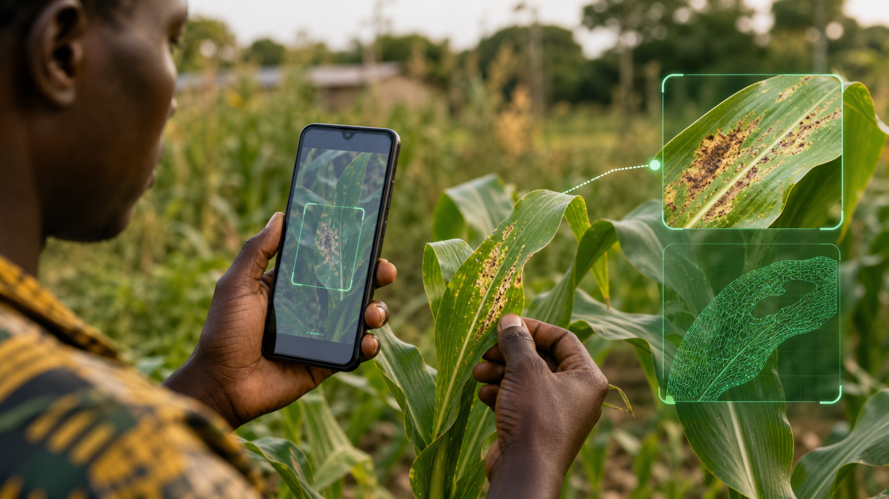
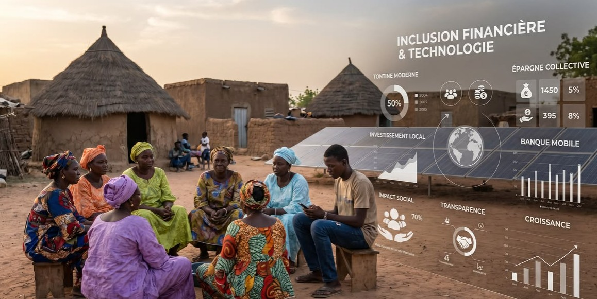
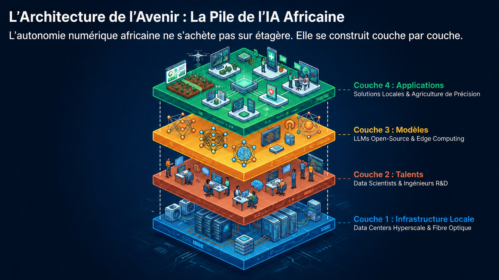

Assistant documentaire ministériel
Accélérer le traitement des courriers, dossiers et réponses internes. Réduction estimée des délais de 60 à 70 %. Modèle déployé on-premise dans le ministère pilote.

Une trajectoire concrète pour déployer l'intelligence artificielle dans les secteurs stratégiques, tout en gardant le contrôle total des données sensibles.
01 — Vision stratégique
Le Bénin s'affirme comme un pôle technologique émergent en Afrique, porté par des réformes structurelles ambitieuses. La création d'un ministère dédié à l'intelligence artificielle marque un tournant : l'IA devient un levier d'action publique concret, pas une promesse lointaine.
Avec un supercalculateur de 1 400 cœurs à l'IMSP, les câbles sous-marins Equiano et 2Africa, le datacenter du MEF et le cadre de l'APDP, le Bénin dispose des fondations pour déployer une IA utile, maîtrisée et souveraine dès maintenant.

02 — Constats actuels
Aujourd'hui, de nombreuses institutions et services publics savent que l'intelligence artificielle peut améliorer l'efficacité, la rapidité et la qualité des services — mais les initiatives restent fragmentées, peu industrialisées et souvent inadaptées aux contraintes de souveraineté. Le principal frein n'est pas seulement technologique : il concerne aussi la gouvernance, le contrôle des données, la confiance, l'infrastructure et la capacité à transformer une ambition politique en projets déployables. Sans cadre clair, les usages restent ponctuels et les données sensibles ne peuvent pas être confiées à des plateformes tierces non maîtrisées.
La majorité des outils d'IA disponibles sont hébergés sur des clouds étrangers ou liés à des APIs tierces qui ne permettent pas une maîtrise réelle des données sensibles ni une continuité souveraine du service.
Les initiatives existantes sont ponctuelles et non coordonnées. Sans priorités définies ni cadre clair, les gains de productivité restent limités et les investissements peu valorisés à l'échelle nationale.
La santé, la justice et la sécurité requièrent des déploiements on-premise stricts. L'offre de solutions IA adaptées à ces contraintes de souveraineté reste quasi inexistante au niveau national.
Sans méthode structurée, sans pilotes validés et sans gouvernance technique, les ambitions stratégiques peinent à se concrétiser. Le risque est de répéter les cycles "étude sans suite" qui freinent la transformation.
03 — Opportunités sectorielles
Sélectionnés pour leur déployabilité souveraine, leur retour rapide et leur pertinence pour les priorités nationales du Bénin.
Accélérer le traitement des courriers, dossiers et réponses internes. Réduction estimée des délais de 60 à 70 %. Modèle déployé on-premise dans le ministère pilote.
Répondre 24h/24 aux questions des usagers sur les démarches et services publics, sans données transmises à l'étranger. Accessible via WhatsApp ou interface web souveraine.
Aider les médecins à analyser symptômes et images médicales. Modèle déployé en local dans les hôpitaux — aucune donnée médicale ne quitte l'établissement.
Analyse d'images radiologiques par IA embarquée dans les hôpitaux et centres de santé. Aucune connexion externe requise. Amélioration du taux de détection précoce.
Anticiper les ruptures, réduire le gaspillage et optimiser les commandes dans les pharmacies hospitalières via des modèles prédictifs locaux. Réduction des coûts estimée : 25 à 35 %.
Suivre les tendances sanitaires par zone sans centraliser les données sensibles. Apprentissage fédéré entre établissements : seuls les modèles circulent, jamais les données brutes.
Sécuriser la dispensation et éviter l'usage de médicaments non autorisés ou rappelés grâce à une vérification automatisée en temps réel, entièrement on-premise.

Recommandations personnalisées sur les semis, traitements et bonnes pratiques via mobile. Inspiré du projet Drone4Ag et de l'app Nana. Fonctionne hors-ligne en zone rurale.

Identifier parasites, stress hydrique et maladies directement sur le terrain par analyse photo sur smartphone. Aucune connexion internet requise — edge AI embarquée.
Adapter l'apprentissage au niveau de chaque élève, corriger automatiquement les exercices et proposer des parcours individualisés. Déployé en établissement — données élèves strictement locales.
Classer factures, contrats et emails, réduire les tâches répétitives dans les PME béninoises. Gain de temps estimé : 30 à 50 % sur les processus documentaires.

Simplifier l'accès au crédit pour les populations non bancarisées et améliorer le support client via des modèles de scoring déployés localement — tontine moderne, banque mobile.
04 — Souveraineté des données
Les données sensibles ne doivent pas être hébergées sur des infrastructures étrangères non maîtrisées. Chaque déploiement doit s'appuyer sur une architecture où l'État béninois conserve le contrôle total des données, des modèles et des accès.

05 — Premiers projets
Cinq projets concrets, déployables rapidement, à fort impact institutionnel et entièrement souverains. Cliquez pour explorer chaque pilote.
Déployer un assistant IA local dans un ministère pilote pour traiter les courriers, classer les dossiers et générer des réponses standardisées en temps réel.
Interface conversationnelle déployée dans une administration, permettant aux citoyens d'obtenir des informations et d'initier des démarches sans attente.
Système intégré de suivi des stocks et d'alerte pour les médicaments non autorisés, déployé on-premise dans des hôpitaux pilotes.
Application mobile fonctionnant hors-ligne pour guider les producteurs sur les semis, traitements et calendriers agricoles — inspiré du projet Drone4Ag et de l'app Nana.
Système de tutorat adaptatif déployé dans des lycées pilotes, personnalisant le parcours de chaque élève. Données élèves strictement locales, aucune transmission à l'étranger.
06 — Feuille de route
De la structuration à l'industrialisation : une méthode progressive, mesurable et souveraine. Cliquez sur chaque phase pour les détails.
07 — Passer à l'action
L'opportunité n'est pas seulement d'adopter l'intelligence artificielle, mais de construire une capacité nationale à la déployer avec maîtrise, impact et souveraineté. La méthode existe. Les cas d'usage sont identifiés. Les infrastructures sont en place. Le moment d'agir est maintenant.
Réduire de 60 à 70 % les délais de traitement des courriers, dossiers et demandes internes dans un ministère pilote désigné.
Gain de temps administratif substantiel, réduction des erreurs de classement, meilleure traçabilité et archivage automatique des dossiers.
On-premise dans le datacenter du ministère. Modèle open-weight (Llama 4 ou Qwen 3) via Ollama. Aucune donnée transmise à l'extérieur de l'institution.
Preuve de concept nationale réplicable dans 15+ ministères. Gouvernance documentaire renforcée. Référence publique de déploiement souverain.
Offrir aux citoyens un accès immédiat aux informations sur les démarches administratives, 24h/24, sans déplacement ni attente en guichet.
Désengorgement des guichets, satisfaction citoyenne améliorée, réduction des demandes répétitives aux agents administratifs.
Serveur local dans l'administration. Accessible via WhatsApp, Signal ou interface web. Entraîné exclusivement sur les données publiques de l'administration béninoise.
Image modernisée de l'État, réduction du coût de service, premier service IA visible et tangible pour le grand public béninois.
Système de gestion prédictive des stocks et d'alerte automatique pour les médicaments non autorisés ou retirés dans 3 hôpitaux pilotes sélectionnés.
Zéro rupture de stock critique, élimination des médicaments interdits, réduction de 25 à 35 % des coûts d'approvisionnement hospitalier.
On-premise dans le SI hospitalier. Synchronisation inter-établissements via apprentissage fédéré. Données médicales strictement locales, jamais transmises.
Sécurité sanitaire nationale renforcée, conformité réglementaire, modèle extensible à tous les CHU et hôpitaux de district du Bénin.
Mettre à disposition des producteurs (ananas, maïs, niébé) un assistant intelligent fonctionnant hors-ligne, inspiré du projet Drone4Ag et de l'application Nana.
Amélioration des rendements agricoles, réduction des pertes par maladies ou ravageurs, autonomie des producteurs en zones rurales à faible connectivité.
Application mobile Android avec modèle embarqué (edge AI). Fonctionne sans connexion internet. Mises à jour synchronisées lors de connexions ponctuelles.
Souveraineté alimentaire renforcée, données agronomiques nationales collectées, impact mesurable sur la productivité agricole et les revenus ruraux.
Déployer dans 5 lycées pilotes un système de tutorat adaptatif qui ajuste les exercices au niveau de chaque élève et corrige automatiquement les productions.
Réduction du décrochage scolaire, amélioration des résultats aux examens nationaux, allègement de la charge des enseignants sur les corrections répétitives.
Serveur local dans chaque établissement. Données élèves strictement locales. Modèles adaptés aux programmes officiels du BEPC et du BAC béninois.
Équité éducative renforcée, données pédagogiques nationales protégées, vitrine internationale de l'IA éducative souveraine africaine.